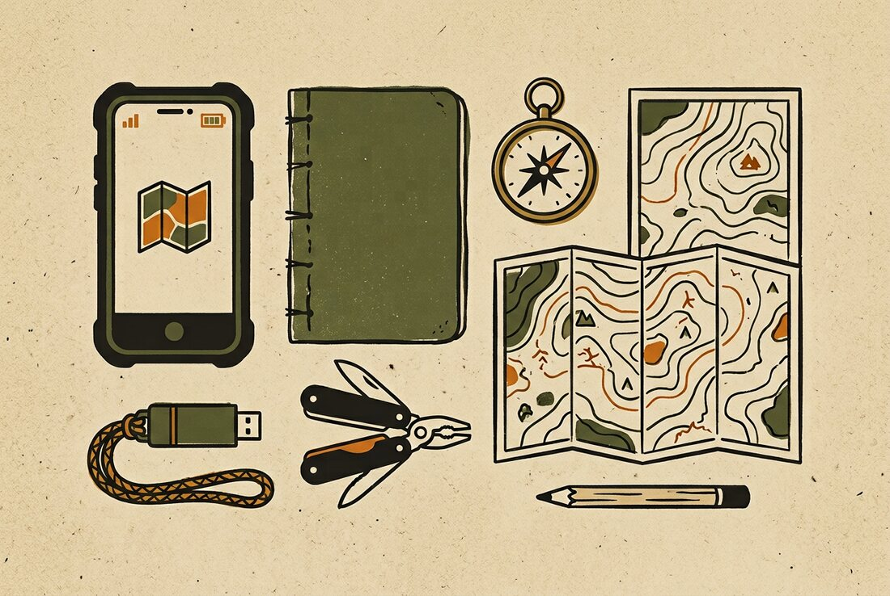
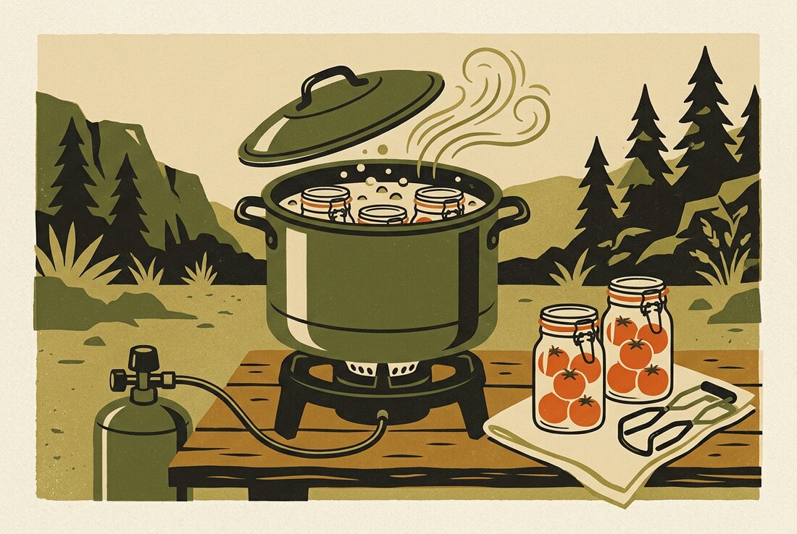

Everything you need, on a stick in your pocket.
A field manual for the day the power, the network, or both, stop being available. One phone. One USB-C drive. Ten setup steps, ten skills, ten recipes, and a shelf of documents you are actually allowed to copy.

What this is
A working plan for an offline library that fits in a pocket: a phone that reads, a USB-C stick that stores, and a shelf of manuals chosen because they are legal to keep. It is the same plan as the printed v2, rebuilt as a site with the pictures, the steps and the recipes the PDF was missing.
What it is not
Not a shop, not medical advice, and not a guarantee. Every number traces to a named source, and every source is linked at the bottom of the card. Where something is unverified, the card says so out loud. Check the source before you bet your water on it.
If you only do three things
Water, warmth and food cover almost every real outage. Each one opens as a full card with the numbers, the failure modes and the source.
The 60-minute setup
How-to, in the order you would need it
Every card is a procedure, not a summary: what to gather, what to do in order, what usually goes wrong, and how you know you have actually finished. Tap a card to open the full version.
Reading a card is not the same as having done it. The drill tab exists to close that gap. Take the blackout drill →
The shelf
What to download, in what order, and what you are allowed to do with it afterwards. Four tiers, so a full phone never costs you the first-aid manual.
Held out, on purpose
Not everything useful belongs in a copyable library. These four were considered and left off the shelf, with the reason and the way back in.
Licence key
| Tag | Means |
|---|
Ten recipes for a pantry, not a fridge
No cream, no fresh herbs, no oven required for most of them. Each card lists the fuel, the water and the calories, because in an outage those are the scarce things.

Tap a card for steps · every canning number is from NCHFP
Tools that do the arithmetic
Four calculators that replace the scribbles on the back of an envelope. They work offline, they need no signal, and they round in the safe direction.
Water disinfection
CDC dose for unscented household bleach, 5–9% sodium hypochlorite.
Boil time and canning adjustment
Elevation changes both. Set your altitude once and both answers update.
Two-week stockpile
Rough numbers, labelled as such. Better than a feeling.
How many bottles is that?
Turning gallons into something you can actually carry home.
Ratios worth memorising
If you remember nothing else from the recipe page, remember these. They survive translation to any pot, any altitude, any number of people.
| Base | Ratio | Method | Time |
|---|---|---|---|
| White rice | 1 : 1¾ water | Boil, lid on, lowest heat, rest off heat | 18 min + 10 |
| Rolled oats | 1 : 2 | Simmer, stir | 5 min |
| Lentils | 1 : 3 | Simmer, no soaking needed | 25–30 min |
| Dry beans | 1 : 3 after soaking | Soak 12 h, boil 30 min, then simmer | 1½–2 h |
| Pasta | 4 qt water per lb | Rolling boil, then time the box | 8–12 min |
| Flatbread | 2 c flour : ⅔ c water + 2 tsp powder | Dry pan, medium heat | 2–3 min a side |
| Oral rehydration | 1 L : 6 tsp sugar : ½ tsp salt | Stir until dissolved | 2 min |
About these numbers
Water dosing and canning times are transcribed from CDC and NCHFP. Stockpile figures are estimates, not rations, and they assume adults at rest. If someone is ill, pregnant, a child or doing hard physical work, the numbers change and a clinician or a current guide beats this page.
The drill
Known unknowns
The honest part. These are the claims this plan leans on that have not been proven, with what to do about each one.
| Claim | Status | What to do |
|---|
Rotation
| When | What | Owner |
|---|
The log
Copy this into 04-notes/drill-log.txt and fill it in every quarter. A drill you did not write down is a drill you will repeat badly.
The pocket cards
Nine cards. Print on card stock, cover both sides with clear packing tape, punch a corner and put them on a ring. This is the only part of the library that still works when the phone is dead.
Printed from Offline Survival Library, field edition v3, . Numbers from CDC, EPA, NCHFP and the US Army field manuals. Not a substitute for training.